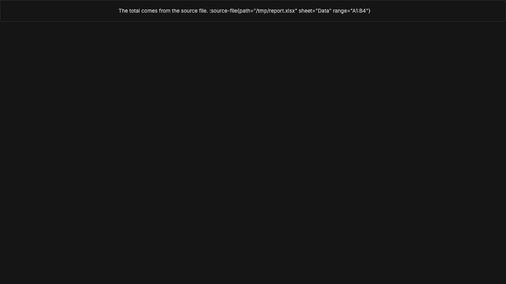

#2933 · Inline file citations remain literal in Markdown output
Verdict: REPRODUCED · Root-cause confidence: high
1. TL;DR
The Markdown renderer shows an inline file directive as source text. The parser supplies the directive name and attributes to the transformer. The transformer restores the source before it checks the registered directive. The current public plugin contract supports block leaf directives only.
2. Claims vs findings
| Claim | Status | Evidence |
|---|---|---|
| The UI shows an inline file directive as literal text. | Verified | The focused component test failed twice. The browser view also showed the complete source text. |
| The transformer receives parsed text directive attributes. | Verified | The trusted source normalizes attributes before the text directive guard. |
| A registered inline directive can mount through the current slot. | Refuted | The guard restores every text directive before the registry lookup. |
| The Codex provider emits this form during a live turn. | Unverified | The check did not start a provider process. The renderer reproduction does not need one. |
| The stored search text contains the directive source. | Unverified | The check did not use private runtime data or create a server instance. |
3. Environment
- Trusted commit:
6185c34984e3fea55b4a7ebbf047c23b8b657974. - Host: macOS Darwin 25.6.0 on arm64. Node: 22.22.3.
- The first full build completed 18 tasks. The second clean full build completed 18 tasks.
- The browser check used Ladle on isolated port 58133. It used no bb data directory or provider.
4. Minimal reproduction
- Check out the trusted commit.
- Install and build the repository.
pnpm install --frozen-lockfile --prefer-offline pnpm exec turbo run build
- Apply the regression test.
- Run the focused test.
cd apps/app pnpm exec vitest run src/components/ui/markdown-message-directives.test.tsx \ -t 'mounts a recognized text directive inside prose'
The test adds this case:
it("mounts a recognized text directive inside prose", () => {
const registry = buildMessageDirectiveRegistry([
slot({ id: "source-file", pluginId: "demo", component: InlineVis }),
]);
render(
<MarkdownPreview
content={'Result :source-file{file="/tmp/data.xlsx"}'}
messageDirectives={{
registry,
message: MESSAGE,
openWorkspaceFile: null,
}}
/>,
);
expect(screen.getByTestId("inline-vis").getAttribute("data-file")).toBe(
"/tmp/data.xlsx",
);
expect(screen.queryByText(/:source-file/)).toBeNull();
});
Expected:
PASS MarkdownPreview message directives mounts a recognized text directive inside prose
Actual in both clean checkouts:
FAIL MarkdownPreview message directives
mounts a recognized text directive inside prose
TestingLibraryElementError: Unable to find an element by: [data-testid="inline-vis"]
DOM text: Result :source-file{file="/tmp/data.xlsx"}

5. Root cause
The preview pipeline starts the directive parser and the message directive transformer. The transformer reads the directive type, name, attributes, and source.
The next guard sends every text directive to the literal-source path. The registry lookup occurs after that guard. The literal-source path joins the source into adjacent prose text. Thus, a valid registry entry cannot receive inline attributes.
The public slot contract specifies a leaf directive. Its mount node is a paragraph. A direct inline mount would therefore change public behavior and document structure.
6. Proposed fix
The product must select the source boundary and display form first. A provider adapter can convert known citations into file links before storage. This choice can also prevent search text pollution. An app change can add a distinct inline directive contract with safe inline markup. A strip rule is smaller, but it removes file and range data. The automated check did not select one behavior.
7. Related issues and pull requests
GitHub metadata links no pull request to this issue. A review of five recent UI issues found no matching renderer defect.
8. Verification
The first checkout used the trusted public commit and produced one failed focused test. A second clean checkout used the same commit. It completed a separate frozen install and full build. The same test failed with the same missing component and literal DOM text. No report correction was necessary.
9. Appendix
Commands used:
git fetch origin main git worktree add --detach <clean-two> 6185c34984e3fea55b4a7ebbf047c23b8b657974 pnpm install --frozen-lockfile --prefer-offline pnpm exec turbo run build cd apps/app pnpm exec vitest run src/components/ui/markdown-message-directives.test.tsx \ -t 'mounts a recognized text directive inside prose'
The browser check used the repository Ladle story runner and the real Markdown component. The issue data remained untrusted. The check did not open external issue links or run linked code.